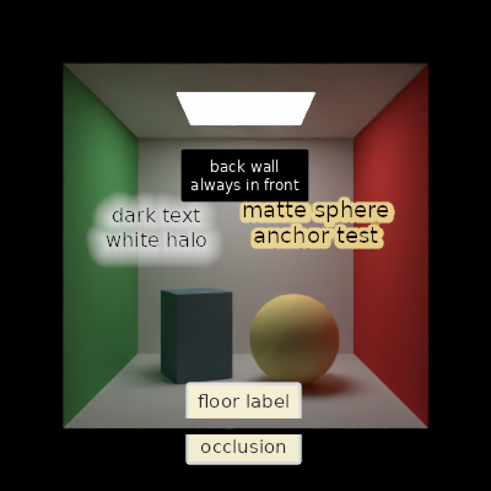

Creates text annotations for `render_scene()` that are anchored to 3D world-space points but drawn in 2D screen space after rendering.
screen_text(
label,
x = 0,
y = 0,
z = 0,
point = NULL,
offset = c(0, 0),
hjust = 0,
vjust = 0.5,
size = 16,
color = "black",
font = "sans",
lineheight = 1,
background_color = "white",
background_alpha = 0,
just = "left",
clip = TRUE,
halo_color = NA,
halo_expand = 0,
halo_alpha = 1,
halo_offset = c(0, 0),
halo_blur = 0,
halo_edge_softness = 0.1,
halo_gap_fill = 2,
halo_gap_fill_alpha_threshold = 0.25,
occlusion = FALSE,
occlusion_mode = "anchor",
occlusion_tolerance = 0.001
)Character vector of labels.
Default `0`. World-space x-coordinate of the anchor point.
Default `0`. World-space y-coordinate of the anchor point.
Default `0`. World-space z-coordinate of the anchor point.
Default `NULL`. Optional 3-column matrix/data frame of world-space anchor points. If supplied, overrides `x`, `y`, and `z`.
Default `c(0,0)`. Pixel offset from the projected anchor point, as `c(x,y)`, with positive y moving down the image.
Default `0`. Horizontal text adjustment, where `0` places the left edge at the anchor, `0.5` centers the label, and `1` right-aligns it.
Default `0.5`. Vertical text adjustment, where `0` places the top edge at the anchor, `0.5` centers the label, and `1` bottom-aligns it.
Default `16`. Text size in pixels.
Default `"black"`. Text color.
Default `"sans"`. Font family.
Default `1`. Line height passed to `rayimage::render_text_image()`.
Default `"white"`. Background color passed to `rayimage::render_text_image()`.
Default `0`. Background alpha passed to `rayimage::render_text_image()`.
Default `"left"`. Text justification passed to `rayimage::render_text_image()`.
Default `TRUE`. If `TRUE`, labels whose anchor point projects outside the image are skipped.
Default `NA`, no halo. If a color is specified, the text label will be surrounded by a halo of this color.
Default `0`. Number of pixels to expand the halo.
Default `1`. Transparency of the halo.
Default `c(0,0)`. Pixel offset to apply to the halo, as `c(x,y)`, with positive y moving down the image.
Default `0`. Amount of blur to apply to the halo.
Default `0.1`. Width of the softened halo edge transition, in pixels.
Default `2`. Maximum alpha gap width, in pixels, to bridge in the halo outline.
Default `0.25`. Alpha threshold used to protect enclosed interior halo gaps from `halo_gap_fill`.
Default `FALSE`. If `TRUE`, trace a ray from the camera to the anchor point and skip the label when another scene object blocks it.
Default `"anchor"`. If `"anchor"`, occlusion skips the entire label when the anchor point is blocked. If `"label"` or `"partial"`, the label and halo are treated as a screen-space banner at the anchor depth and each text pixel is hidden only when the scene depth at that pixel is closer.
Default `0.001`. Endpoint tolerance for the occlusion ray. Values below `1` are treated as a fraction of the camera-to-anchor distance, which helps avoid self-occlusion when the anchor lies on a surface. Values of `1` or greater are treated as scene-unit distances.
A data frame describing screen-space text annotations.
# Start with a Cornell box that has one bright object and one dark object.
scene = generate_cornell(lightwidth = 250, lightdepth = 250) |>
add_object(sphere(
x = 180, y = 90, z = 260, radius = 90,
material = diffuse(color = "#f2c14e")
)) |>
add_object(cube(
x = 385, y = 90, z = 330, xwidth = 120, ywidth = 180, zwidth = 120,
angle = c(0, 25, 0), material = diffuse(color = "#243846")
))
# Labels can be built in separate calls and passed as a list to render_scene().
sphere_label = screen_text(
label = "matte sphere\nanchor test",
x = 180, y = 190, z = 260,
offset = c(18, -28),
hjust = 0.5,
vjust = 1,
size = 18,
color = "black",
lineheight = 0.95,
background_alpha = 0,
just = "left",
halo_color = "#f2c14e",
halo_expand = 4,
halo_alpha = 0.8,
halo_offset = c(1, 1),
halo_blur = 0.5,
halo_edge_softness = 0.5,
halo_gap_fill = 1,
halo_gap_fill_alpha_threshold = 0.2,
occlusion = TRUE,
occlusion_mode = "anchor",
occlusion_tolerance = 0.002
)
# Dark text over a dark object remains legible with a subtle white halo.
box_label = screen_text(
label = "dark text\nwhite halo",
x = 385, y = 195, z = 20,
offset = c(-16, -34),
hjust = 0.5,
vjust = 1,
size = 16,
color = "#111111",
lineheight = 1.05,
background_alpha = 0,
just = "right",
halo_color = "white",
halo_expand = 6,
halo_alpha = 0.72,
halo_offset = c(-1, 2),
halo_blur = 1.5,
halo_edge_softness = 10,
halo_gap_fill = 3,
halo_gap_fill_alpha_threshold = 0.35,
occlusion = TRUE,
occlusion_mode = "label",
occlusion_tolerance = 0.01
)
# A floor label shows multi-line text, custom justification, and partial occlusion.
floor_label = screen_text(
label = "floor label\n\nocclusion",
point = matrix(c(280, 0, 50), ncol = 3),
offset = c(0, 18),
hjust = 0.5,
vjust = 0.7,
size = 15,
color = "#222222",
lineheight = 1,
background_color = "#fff7cc",
background_alpha = 0.65,
just = "center",
clip = FALSE,
halo_color = "white",
halo_expand = 3,
halo_alpha = 0.7,
halo_blur = 0,
halo_edge_softness = 0.25,
halo_gap_fill = 2,
halo_gap_fill_alpha_threshold = 0.25,
occlusion = TRUE,
occlusion_mode = "partial",
occlusion_tolerance = 0.005
)
# Later list entries draw after earlier entries.
wall_label = screen_text(
label = "back wall\nalways in front",
x = 278, y = 330, z = 545,
offset = c(0, -20),
hjust = 0.5,
vjust = 1,
size = 12,
color = "white",
background_color = "black",
background_alpha = 0.35,
halo_color = "black",
halo_expand = 2,
clip = TRUE
)
text_layers = list(sphere_label, box_label, floor_label, wall_label)
render_scene(
scene,
samples = 32,
clamp_value = 5,
aperture = 0,
fov = 50,
ambient_light = FALSE,
screen_text = text_layers
)
#> Setting default values for Cornell box: lookfrom `c(278,278,-800)` lookat `c(278,278,555/2)` .
